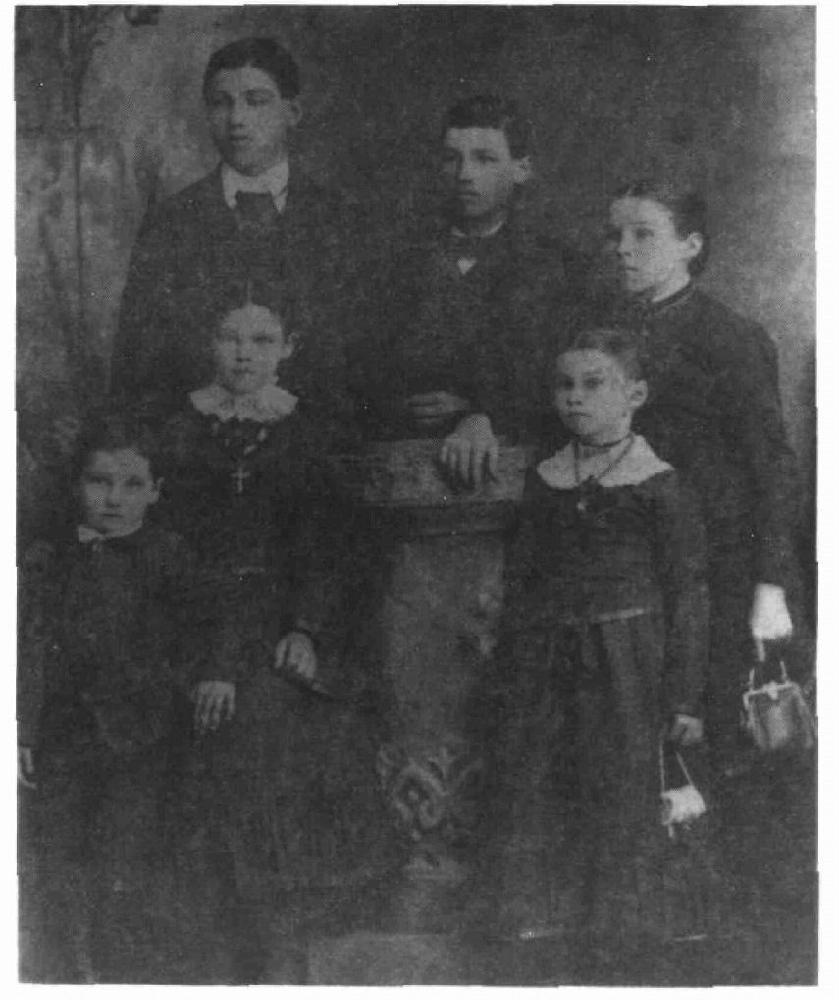

Son of John Kastl · John’s branch
John Kastl 1883–1948
Descent
Andreas Kastl Wolfgang Jan Kastl Jan Kastl Thomas Kastl John Kastl John Kastl Show in the family tree

Children of John Kastl: Joseph, Thomas, Elizabeth, John, Cecelia, and Mary. p. 29
What the book records Born 12 May 1883, Saunders County, Nebraska p. 28 p. 40 As printed 9. JOHN — (b) 12 May 1883, (d) 22 Dec. 1948, (m) Frances Havlovic—20 Feb. 1906 (2) Aloise Pokorny. — p. 28 JOHN KASTL (John, Thomas, John, John, Andreas) born 12 May 1883, Saunders County, Nebraska — p. 40 Married (1) Frances Havlovic, 20 February 1906, Plasi, Nebraska p. 28 p. 40 As printed 9. JOHN — (b) 12 May 1883, (d) 22 Dec. 1948, (m) Frances Havlovic—20 Feb. 1906 (2) Aloise Pokorny. — p. 28 He married Frances Havlovic 20 February 1906 at Plasi, Nebraska. — p. 40 (2) Aloise Pokorny p. 28 p. 40 As printed 9. JOHN — (b) 12 May 1883, (d) 22 Dec. 1948, (m) Frances Havlovic—20 Feb. 1906 (2) Aloise Pokorny. — p. 28 John married (2) Aloise Pokorny. — p. 40 Died 22 December 1948 p. 28 p. 40 As printed 9. JOHN — (b) 12 May 1883, (d) 22 Dec. 1948, (m) Frances Havlovic—20 Feb. 1906 (2) Aloise Pokorny. — p. 28 died 22 December 1948 and was buried at Bee, Nebraska. — p. 40 Buried Bee, Nebraska p. 40 As printed died 22 December 1948 and was buried at Bee, Nebraska. — p. 40
Family Parents John Kastl 1835–1890 and Marie Kunes 1839–1934
Spouse Frances Havlovic 1887–1935
Married 20 February 1906, Plasi, Nebraska p. 28 p. 40 As printed 9. JOHN — (b) 12 May 1883, (d) 22 Dec. 1948, (m) Frances Havlovic—20 Feb. 1906 (2) Aloise Pokorny. — p. 28 He married Frances Havlovic 20 February 1906 at Plasi, Nebraska. — p. 40
Children Edmund Kastl b. 1909 Ernest Kastl b. 1914 Bernard Kastl b. 1921 John married (2) Aloise Pokorny (no date printed); no children of that marriage are listed. The book prints John's lineage as "(John, Thomas, John, John, Andreas)" and his sons' as "(John, John)".